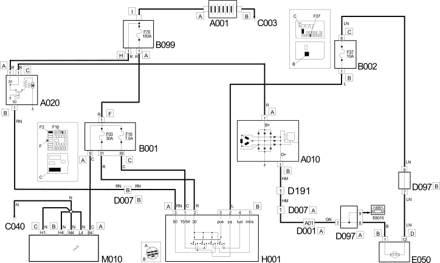

E5010 IGNITION AND RECHARGING WIRING DIAGRAM
- Path
- Electrical equipment > 1 ELECTRICAL FUNCTIONS > E50 ENGINE CONTROL AND MANAGEMENT SYSTEMS > E5010 STARTING AND RECHARING > E5010 IGNITION AND RECHARGING WIRING DIAGRAM
- Kind
- topic
- Applies to
- engines: 2.0 16V; all production periods
- Interactive page
- https://sloeber94.github.io/elrnDB-fDct/en/#/244001866
Applies to: engines: 2.0 16V; all production periods
Wiring Diagram

Components
Component code | Description | Reference to the assembly |
|---|---|---|
BATTERY | - | |
ALTERNATOR | ||
STARTER MOTOR | ||
JUNCTION UNIT | ||
JUNCTION UNIT UNDER DASHBOARD | - | |
MAXI FUSE BOX ON BATTERY | - | |
BATTERY EARTH ON BODYSHELL | - | |
FRONT/DASHBOARD COUPLING | - | |
ALTERNATOR COUPLING | - | |
SHORT CIRCUITING COUPLING | - | |
INSTRUMENT PANEL | ||
IGNITION SWITCH | ||
- |